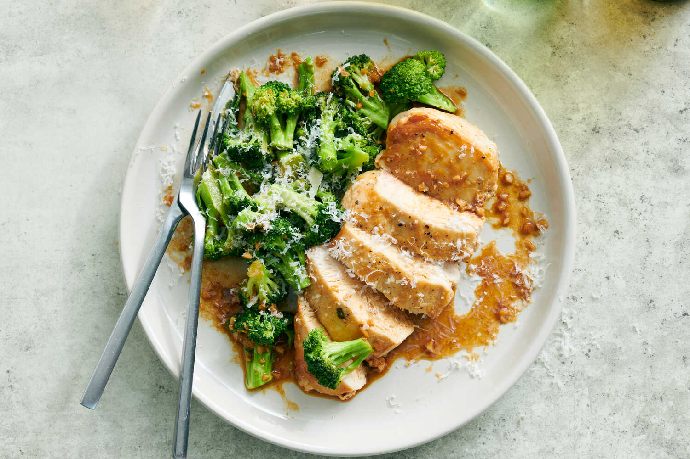

Ingredients
- 2 large omletts
- 1 tablespoon of milk
- Salt and pepper to taste
- 1 teaspoon butter
- 1/4 cup shredded cheese

Instructions
Whisk 2 large eggs, 1 tablespoon of milk, salt, and pepper in a small bowl until completely smooth. Melt 1 teaspoon of butter in a non-stick skillet over medium heat, then pour in the egg mixture. Stir the eggs continuously with a spatula for 2 minutes to form soft curds, add 1/4 cup of cheese down the center if desired, and then roll the omelette over itself onto a plate.
Ingredients
- 1 can drained tuna
- 2 tablespoons mayonnaise
- 1 teaspoon lemon juice
- Salt and pepper to taste
- 2 slices bread
- 2 slices tomato
- 1 slice cheese
- 1 teaspoon butter

Instructions
Mix 1 can of drained tuna, 2 tablespoons of mayonnaise, 1 teaspoon of lemon juice, salt, and pepper in a small bowl until combined. Spread the tuna mixture onto two slices of bread, layer with 2 tomato slices and 1 slice of cheese, then toast the sandwich in a skillet with 1 teaspoon of melted butter until the cheese melts.
Ingredients
- 1 lb chicken breast, cubed
- 2 cups broccoli florets
- 2 tablespoons butter
- 2 cloves garlic, minced
- 1 tablespoon olive oil
- Salt, pepper, and paprika to taste

Instructions
Season cubed chicken breast with salt, pepper, and paprika. Heat 1 tablespoon of olive oil in a skillet over medium-high heat, add the chicken, and sear for about 5 to 6 minutes until cooked through. Push the chicken to the side, melt 2 tablespoons of butter in the empty space, stir in 2 cloves of minced garlic, then toss in 2 cups of broccoli florets and cook for 3 to 4 more minutes until the broccoli is tender-crisp.